pacman::p_load(sf, spdep, GWmodel, SpatialML, tmap, rsample, Metrics, tidyverse,stringr,httr, jsonlite, rvest,knitr,kableExtra)Take home Exercise03
Predicting HDB Resale Prices with Geographically Weighted Machine Learning Methods
Housing is an essential component of household wealth worldwide. Buying a housing has always been a major investment for most people. The price of housing is affected by many factors. Some of them are global in nature such as the general economy of a country or inflation rate. Others can be more specific to the properties themselves. These factors can be further divided to structural and locational factors. Structural factors are variables related to the property themselves such as the size, fitting, and tenure of the property. Locational factors are variables related to the neighbourhood of the properties such as proximity to childcare centre, public transport service and shopping centre.
Conventional, housing resale prices predictive models were built by using Ordinary Least Square (OLS) method. However, this method failed to take into consideration that spatial autocorrelation and spatial heterogeneity exist in geographic data sets such as housing transactions. With the existence of spatial autocorrelation, the OLS estimation of predictive housing resale pricing models could lead to biased, inconsistent, or inefficient results (Anselin 1998). In view of this limitation, Geographical Weighted Models were introduced to better calibrate predictive models for housing resale prices.
In this study, we focus on key residential areas—Jurong East, Woodlands, Yishun, Tampines, Kallang, and Queenstown—alongside HDB projects for 2024. This targeted approach aims to offer valuable insights for prospective homebuyers, helping them make well-informed decisions and better prepare for the housing market.
In this take-home exercise, we are required to calibrate a predictive model to predict HDB resale prices between July-September 2024 by using HDB resale transaction records in 2023.
1.The Data
Aspatial dataset:
- HDB Resale data: a list of HDB resale transacted prices in Singapore from Jan 2017 onwards. It is in csv format which can be downloaded from Data.gov.sg.
Geospatial dataset:
- MP14_SUBZONE_WEB_PL: a polygon feature data providing information of URA 2014 Master Plan Planning Subzone boundary data. It is in ESRI shapefile format. This data set was also downloaded from Data.gov.sg
Locational factors with geographic coordinates:
Downloaded from Data.gov.sg.
Eldercare data is a list of eldercare in Singapore. It is in shapefile format.
Hawker Centre data is a list of hawker centres in Singapore. It is in geojson format.
Parks data is a list of parks in Singapore. It is in geojson format.
Supermarket data is a list of supermarkets in Singapore. It is in geojson format.
CHAS clinics data is a list of CHAS clinics in Singapore. It is in geojson format.
Kindergartens data is a list of kindergartens in Singapore. It is in geojson format.
NoteIf we need to display the prediction results on a web application or map, GeoJSON is more convenient because most web map libraries (such as Leaflet and Mapbox) directly support GeoJSON data.
When visualizing the analysis results, we can directly export them to GeoJSON, which is convenient for displaying the prediction results on various online map applications.
Downloaded from Datamall.lta.gov.sg.
MRT data is a list of MRT/LRT stations in Singapore with the station names and codes. It is in shapefile format.
Bus stops data is a list of bus stops in Singapore. It is in shapefile format.
Locational factors without geographic coordinates:
Retrieved/Scraped from other sources
CBD coordinates obtained from Google.
Shopping malls data is a list of Shopping malls in Singapore obtained from Wikipedia.
Good primary schools is a list of primary schools that are ordered in ranking in terms of popularity and this can be found at Local Salary Forum.
2.Getting start
Installing and Loading R packages
Importing Resale Data
Using HDB resale transaction records in 2023 and the future data from July to September for comparison.
resale <- read_csv("data/rawdata/aspatial/resale.csv") %>%
filter((month >= "2023-01" & month < "2024-01") |
(month >= "2024-07" & month <= "2024-09"))Rows: 192234 Columns: 11
── Column specification ────────────────────────────────────────────────────────
Delimiter: ","
chr (8): month, town, flat_type, block, street_name, storey_range, flat_mode...
dbl (3): floor_area_sqm, lease_commence_date, resale_price
ℹ Use `spec()` to retrieve the full column specification for this data.
ℹ Specify the column types or set `show_col_types = FALSE` to quiet this message.Data Processing for HDB Resale
The specific steps are as follows:
Create a new column address: Combine the address information into a new column address by splicing the block and street_name columns.
Extract and convert the remaining lease time: Extract the year and month from the remaining_lease column and create integer columns remaining_lease_yr and remaining_lease_mth to represent the remaining lease years and months respectively.
Remove columns that are no longer needed: Delete the block, street_name, and remaining_lease columns because they have been integrated or decomposed into other variables.
Clean the flat_type column: Remove the word “ROOM” in the flat_type column and represent the room type as a pure number.
Convert the resale_price column to an integer: Convert the data type of the resale price resale_price column to an integer.
Separate the storey_range column: Split the floor range information from the storey_range column into two columns, min_storey and max_storey, and convert them to integer type.
Calculate the middle value of the floor: Create a storey_mid column, calculate the average of min_storey and max_storey, and represent the middle number of the floor.
Remove redundant floor columns: Delete the min_storey and max_storey columns because their middle values are already represented by the storey_mid column.
resale_tidy <- resale %>%
mutate(address = paste(block,street_name)) %>%
mutate(remaining_lease_yr = as.integer(
str_sub(remaining_lease, 0, 2)))%>%
mutate(remaining_lease_mth = as.integer(
str_sub(remaining_lease, 9, 11))) %>%
mutate(total_remaining_months = remaining_lease_yr * 12 + remaining_lease_mth) %>%
select(-block, -street_name,-remaining_lease,-remaining_lease_yr,-remaining_lease_mth) %>%
mutate(flat_type = str_replace(flat_type, " ROOM", "")) %>%
mutate(resale_price = as.integer(resale_price)) %>%
separate(storey_range, into = c("min_storey", "max_storey"), sep = " TO ", convert = TRUE) %>%
mutate(storey_mid = (min_storey + max_storey) / 2) %>%
select(-min_storey, -max_storey) Convert into categorical variables
Factor is a data type used to represent categorical variables. And they can store discrete, finite categories.
resale_tidy$town <- as.factor(resale_tidy$town)See how many categories of the flat_type.
unique(resale_tidy$flat_type)[1] "2" "3" "4" "5"
[5] "EXECUTIVE" "MULTI-GENERATION" "1" See how many categories of the flat_model.
unique(resale_tidy$flat_model) [1] "Improved" "New Generation" "Model A"
[4] "DBSS" "Standard" "Apartment"
[7] "Simplified" "Premium Apartment" "Model A-Maisonette"
[10] "Maisonette" "Model A2" "Type S1"
[13] "Type S2" "2-room" "Adjoined flat"
[16] "Terrace" "Premium Apartment Loft" "Multi Generation"
[19] "Improved-Maisonette" "3Gen" Numerical categorical variables for flat_model.
resale_tidy$flat_model_numeric <- as.numeric(factor(resale_tidy$flat_model))
factor_levels <- levels(factor(resale_tidy$flat_model))
mapping <- data.frame(Number = 1:length(factor_levels), Model = factor_levels)
print(mapping) Number Model
1 1 2-room
2 2 3Gen
3 3 Adjoined flat
4 4 Apartment
5 5 DBSS
6 6 Improved
7 7 Improved-Maisonette
8 8 Maisonette
9 9 Model A
10 10 Model A-Maisonette
11 11 Model A2
12 12 Multi Generation
13 13 New Generation
14 14 Premium Apartment
15 15 Premium Apartment Loft
16 16 Simplified
17 17 Standard
18 18 Terrace
19 19 Type S1
20 20 Type S2Numerical categorical variables flat_type.
resale_tidy$flat_type_numeric <- as.numeric(factor(resale_tidy$flat_type))
factor_levels2 <- levels(factor(resale_tidy$flat_type))
mapping <- data.frame(Number = 1:length(factor_levels2), Model = factor_levels2)
print(mapping) Number Model
1 1 1
2 2 2
3 3 3
4 4 4
5 5 5
6 6 EXECUTIVE
7 7 MULTI-GENERATIONresale_tidy<-resale_tidy %>% select(-flat_type,-flat_model)
Note
After conversion to factors, the model can generate different coefficients for each category, which makes it easier to interpret the specific impact of each category on the result. For example, for a variable like “flat_model” (house model), the model can provide the impact of each house model on price, rather than simply encoding the house model.
Getting coords
We firstly extract the unique address from dataset,which will be more quickly to get the result.
add_list <- sort(unique(resale_tidy$address))Using the code provided by Professor Kam ,which created the function to get the coordinates from onemap website.
Show the code
get_coords <- function(add_list){
# Create a data frame to store all retrieved coordinates
postal_coords <- data.frame()
for (i in add_list){
#print(i)
r <- GET('https://www.onemap.gov.sg/api/common/elastic/search?',
query=list(searchVal=i,
returnGeom='Y',
getAddrDetails='Y'))
data <- fromJSON(rawToChar(r$content))
found <- data$found
res <- data$results
# Create a new data frame for each address
new_row <- data.frame()
# If single result, append
if (found == 1){
postal <- res$POSTAL
lat <- res$LATITUDE
lng <- res$LONGITUDE
new_row <- data.frame(address= i,
postal = postal,
latitude = lat,
longitude = lng)
}
# If multiple results, drop NIL and append top 1
else if (found > 1){
# Remove those with NIL as postal
res_sub <- res[res$POSTAL != "NIL", ]
# Set as NA first if no Postal
if (nrow(res_sub) == 0) {
new_row <- data.frame(address= i,
postal = NA,
latitude = NA,
longitude = NA)
}
else{
top1 <- head(res_sub, n = 1)
postal <- top1$POSTAL
lat <- top1$LATITUDE # return x and y
lng <- top1$LONGITUDE
new_row <- data.frame(address= i,
postal = postal,
latitude = lat,
longitude = lng)
}
}
else {
new_row <- data.frame(address= i,
postal = NA,
latitude = NA, # take care of any possible data
longitude = NA)
}
# Add the row
postal_coords <- rbind(postal_coords, new_row)
}
return(postal_coords)
}
Note
In this exercise,we mainly use the detail address to get the coordinate and there is another method,which is using the postal,and the result is also the similar.
Start to get coordinates of each asset.
coords_resale2 <- get_coords(add_list)Next saving and reading the data for later convenient analysis
saveRDS(coords_resale2, "data/rds/coords_resale2.rds")coords_resale2 <- readRDS("data/rds/coords_resale2.rds")saveRDS(coords_resale, "data/rds/coords_resale.rds")coords_resale <- readRDS("data/rds/coords_resale.rds")Integrate data by using left join
resale_tidy <- resale_tidy %>%
left_join(coords_resale2, by = "address")Delete the useless postal columns
resale_tidy2 <- resale_tidy %>%
select(-postal) Here we check that there is no coordinate information in the dataset ,so we manually add on and transfer into Singapore coordinate.
print(st_crs(resale_tidy2))Coordinate Reference System: NAresale_tidy2 <- st_as_sf(resale_tidy2, coords = c("longitude", "latitude"), crs = 4326) %>%
st_transform(crs = 3414)Now we can see it is successfully converted.
st_crs(resale_tidy2)Coordinate Reference System:
User input: EPSG:3414
wkt:
PROJCRS["SVY21 / Singapore TM",
BASEGEOGCRS["SVY21",
DATUM["SVY21",
ELLIPSOID["WGS 84",6378137,298.257223563,
LENGTHUNIT["metre",1]]],
PRIMEM["Greenwich",0,
ANGLEUNIT["degree",0.0174532925199433]],
ID["EPSG",4757]],
CONVERSION["Singapore Transverse Mercator",
METHOD["Transverse Mercator",
ID["EPSG",9807]],
PARAMETER["Latitude of natural origin",1.36666666666667,
ANGLEUNIT["degree",0.0174532925199433],
ID["EPSG",8801]],
PARAMETER["Longitude of natural origin",103.833333333333,
ANGLEUNIT["degree",0.0174532925199433],
ID["EPSG",8802]],
PARAMETER["Scale factor at natural origin",1,
SCALEUNIT["unity",1],
ID["EPSG",8805]],
PARAMETER["False easting",28001.642,
LENGTHUNIT["metre",1],
ID["EPSG",8806]],
PARAMETER["False northing",38744.572,
LENGTHUNIT["metre",1],
ID["EPSG",8807]]],
CS[Cartesian,2],
AXIS["northing (N)",north,
ORDER[1],
LENGTHUNIT["metre",1]],
AXIS["easting (E)",east,
ORDER[2],
LENGTHUNIT["metre",1]],
USAGE[
SCOPE["Cadastre, engineering survey, topographic mapping."],
AREA["Singapore - onshore and offshore."],
BBOX[1.13,103.59,1.47,104.07]],
ID["EPSG",3414]]Importing Geospatial Data
mpsz <- st_read(dsn = "data/rawdata/geospatial",
layer = "MP14_SUBZONE_WEB_PL")Reading layer `MP14_SUBZONE_WEB_PL' from data source
`/Users/yangyayong/Downloads/学校文件/smu文件/Term 3/G/yyyirene/ISSS626-GAA/Take_home_Ex/Take_home_Ex03/data/rawdata/geospatial'
using driver `ESRI Shapefile'
Simple feature collection with 323 features and 15 fields
Geometry type: MULTIPOLYGON
Dimension: XY
Bounding box: xmin: 2667.538 ymin: 15748.72 xmax: 56396.44 ymax: 50256.33
Projected CRS: SVY21Importing Locational factors :
Importing Locational factors with geographic coordinates
eldercare <- st_read(dsn = "data/rawdata/geospatial", layer = "ELDERCARE") #meterReading layer `ELDERCARE' from data source
`/Users/yangyayong/Downloads/学校文件/smu文件/Term 3/G/yyyirene/ISSS626-GAA/Take_home_Ex/Take_home_Ex03/data/rawdata/geospatial'
using driver `ESRI Shapefile'
Simple feature collection with 133 features and 18 fields
Geometry type: POINT
Dimension: XY
Bounding box: xmin: 14481.92 ymin: 28218.43 xmax: 41665.14 ymax: 46804.9
Projected CRS: SVY21hawker_centres <- st_read("data/rawdata/geospatial/HawkerCentresGEOJSON.geojson")Reading layer `HawkerCentresGEOJSON' from data source
`/Users/yangyayong/Downloads/学校文件/smu文件/Term 3/G/yyyirene/ISSS626-GAA/Take_home_Ex/Take_home_Ex03/data/rawdata/geospatial/HawkerCentresGEOJSON.geojson'
using driver `GeoJSON'
Simple feature collection with 125 features and 2 fields
Geometry type: POINT
Dimension: XYZ
Bounding box: xmin: 103.6974 ymin: 1.272716 xmax: 103.9882 ymax: 1.449017
z_range: zmin: 0 zmax: 0
Geodetic CRS: WGS 84kindergartens <- st_read("data/rawdata/geospatial/Kindergartens.geojson")Reading layer `Kindergartens' from data source
`/Users/yangyayong/Downloads/学校文件/smu文件/Term 3/G/yyyirene/ISSS626-GAA/Take_home_Ex/Take_home_Ex03/data/rawdata/geospatial/Kindergartens.geojson'
using driver `GeoJSON'
Simple feature collection with 448 features and 2 fields
Geometry type: POINT
Dimension: XYZ
Bounding box: xmin: 103.6887 ymin: 1.247759 xmax: 103.9717 ymax: 1.455452
z_range: zmin: 0 zmax: 0
Geodetic CRS: WGS 84parks <- st_read("data/rawdata/geospatial/Parks.geojson")Reading layer `Parks' from data source
`/Users/yangyayong/Downloads/学校文件/smu文件/Term 3/G/yyyirene/ISSS626-GAA/Take_home_Ex/Take_home_Ex03/data/rawdata/geospatial/Parks.geojson'
using driver `GeoJSON'
Simple feature collection with 430 features and 2 fields
Geometry type: POINT
Dimension: XYZ
Bounding box: xmin: 103.6929 ymin: 1.214491 xmax: 104.0538 ymax: 1.462094
z_range: zmin: 0 zmax: 0
Geodetic CRS: WGS 84supermarkets <- st_read("data/rawdata/geospatial/SupermarketsGEOJSON.geojson")Reading layer `SupermarketsGEOJSON' from data source
`/Users/yangyayong/Downloads/学校文件/smu文件/Term 3/G/yyyirene/ISSS626-GAA/Take_home_Ex/Take_home_Ex03/data/rawdata/geospatial/SupermarketsGEOJSON.geojson'
using driver `GeoJSON'
Simple feature collection with 526 features and 2 fields
Geometry type: POINT
Dimension: XYZ
Bounding box: xmin: 103.6258 ymin: 1.24715 xmax: 104.0036 ymax: 1.461526
z_range: zmin: 0 zmax: 0
Geodetic CRS: WGS 84chas_clinics <- st_read("data/rawdata/geospatial/CHASclinics.geojson") Reading layer `CHASClinics' from data source
`/Users/yangyayong/Downloads/学校文件/smu文件/Term 3/G/yyyirene/ISSS626-GAA/Take_home_Ex/Take_home_Ex03/data/rawdata/geospatial/CHASClinics.geojson'
using driver `GeoJSON'
Simple feature collection with 1193 features and 2 fields
Geometry type: POINT
Dimension: XYZ
Bounding box: xmin: 103.5818 ymin: 1.016264 xmax: 103.9903 ymax: 1.456037
z_range: zmin: 0 zmax: 0
Geodetic CRS: WGS 84BusStop <- st_read(dsn = "data/rawdata/geospatial", layer = "BusStop") Reading layer `BusStop' from data source
`/Users/yangyayong/Downloads/学校文件/smu文件/Term 3/G/yyyirene/ISSS626-GAA/Take_home_Ex/Take_home_Ex03/data/rawdata/geospatial'
using driver `ESRI Shapefile'
Simple feature collection with 5166 features and 3 fields
Geometry type: POINT
Dimension: XY
Bounding box: xmin: 3970.122 ymin: 26482.1 xmax: 48285.52 ymax: 52983.82
Projected CRS: SVY21MRT <- st_read(dsn = "data/rawdata/geospatial", layer = "RapidTransitSystemStation") Reading layer `RapidTransitSystemStation' from data source
`/Users/yangyayong/Downloads/学校文件/smu文件/Term 3/G/yyyirene/ISSS626-GAA/Take_home_Ex/Take_home_Ex03/data/rawdata/geospatial'
using driver `ESRI Shapefile'Warning in CPL_read_ogr(dsn, layer, query, as.character(options), quiet, : GDAL
Message 1: Non closed ring detected. To avoid accepting it, set the
OGR_GEOMETRY_ACCEPT_UNCLOSED_RING configuration option to NOSimple feature collection with 230 features and 5 fields
Geometry type: POLYGON
Dimension: XY
Bounding box: xmin: 6068.209 ymin: 27478.44 xmax: 45377.5 ymax: 47913.58
Projected CRS: SVY21Convert a multipoint object (MULTIPOINT) to a single point (POINT) ,which is convenient for subsequent calculations
MRT <- st_cast(MRT, "POINT")Warning in st_cast.sf(MRT, "POINT"): repeating attributes for all
sub-geometries for which they may not be constantImporting Locational factors without geographic coordinates
Goodprimaryschool <- read_csv("data/rawdata/aspatial/Goodprimaryschool.csv") Rows: 179 Columns: 1
── Column specification ────────────────────────────────────────────────────────
Delimiter: ","
chr (1): school_name
ℹ Use `spec()` to retrieve the full column specification for this data.
ℹ Specify the column types or set `show_col_types = FALSE` to quiet this message.Shoppingmalls <- read_csv("data/rawdata/aspatial/Shoppingmalls.csv")Rows: 174 Columns: 2
── Column specification ────────────────────────────────────────────────────────
Delimiter: ","
chr (2): mallname, malladdress
ℹ Use `spec()` to retrieve the full column specification for this data.
ℹ Specify the column types or set `show_col_types = FALSE` to quiet this message.add_list<- sort(unique(Goodprimaryschool$school_name))coords_Goodprimaryschool <- get_coords(add_list) saveRDS(coords_Goodprimaryschool, "data/rds/coords_Goodprimaryschool.rds")coords_Goodprimaryschool <- readRDS("data/rds/coords_Goodprimaryschool.rds")Goodprimaryschool <- st_as_sf(coords_Goodprimaryschool, coords = c("longitude", "latitude"), crs = 4326) %>%
st_transform(crs = 3414)st_crs(Goodprimaryschool)Coordinate Reference System:
User input: EPSG:3414
wkt:
PROJCRS["SVY21 / Singapore TM",
BASEGEOGCRS["SVY21",
DATUM["SVY21",
ELLIPSOID["WGS 84",6378137,298.257223563,
LENGTHUNIT["metre",1]]],
PRIMEM["Greenwich",0,
ANGLEUNIT["degree",0.0174532925199433]],
ID["EPSG",4757]],
CONVERSION["Singapore Transverse Mercator",
METHOD["Transverse Mercator",
ID["EPSG",9807]],
PARAMETER["Latitude of natural origin",1.36666666666667,
ANGLEUNIT["degree",0.0174532925199433],
ID["EPSG",8801]],
PARAMETER["Longitude of natural origin",103.833333333333,
ANGLEUNIT["degree",0.0174532925199433],
ID["EPSG",8802]],
PARAMETER["Scale factor at natural origin",1,
SCALEUNIT["unity",1],
ID["EPSG",8805]],
PARAMETER["False easting",28001.642,
LENGTHUNIT["metre",1],
ID["EPSG",8806]],
PARAMETER["False northing",38744.572,
LENGTHUNIT["metre",1],
ID["EPSG",8807]]],
CS[Cartesian,2],
AXIS["northing (N)",north,
ORDER[1],
LENGTHUNIT["metre",1]],
AXIS["easting (E)",east,
ORDER[2],
LENGTHUNIT["metre",1]],
USAGE[
SCOPE["Cadastre, engineering survey, topographic mapping."],
AREA["Singapore - onshore and offshore."],
BBOX[1.13,103.59,1.47,104.07]],
ID["EPSG",3414]]add_list<- sort(unique(Shoppingmalls$malladdress))coords_Shoppingmalls <- get_coords(add_list)saveRDS(coords_Shoppingmalls, "data/rds/coords_Shoppingmalls.rds")coords_Shoppingmalls <- readRDS("data/rds/coords_Shoppingmalls.rds")Shoppingmalls <- st_as_sf(coords_Shoppingmalls, coords = c("longitude", "latitude"), crs = 4326) %>%
st_transform(crs = 3414)st_crs(Shoppingmalls)Coordinate Reference System:
User input: EPSG:3414
wkt:
PROJCRS["SVY21 / Singapore TM",
BASEGEOGCRS["SVY21",
DATUM["SVY21",
ELLIPSOID["WGS 84",6378137,298.257223563,
LENGTHUNIT["metre",1]]],
PRIMEM["Greenwich",0,
ANGLEUNIT["degree",0.0174532925199433]],
ID["EPSG",4757]],
CONVERSION["Singapore Transverse Mercator",
METHOD["Transverse Mercator",
ID["EPSG",9807]],
PARAMETER["Latitude of natural origin",1.36666666666667,
ANGLEUNIT["degree",0.0174532925199433],
ID["EPSG",8801]],
PARAMETER["Longitude of natural origin",103.833333333333,
ANGLEUNIT["degree",0.0174532925199433],
ID["EPSG",8802]],
PARAMETER["Scale factor at natural origin",1,
SCALEUNIT["unity",1],
ID["EPSG",8805]],
PARAMETER["False easting",28001.642,
LENGTHUNIT["metre",1],
ID["EPSG",8806]],
PARAMETER["False northing",38744.572,
LENGTHUNIT["metre",1],
ID["EPSG",8807]]],
CS[Cartesian,2],
AXIS["northing (N)",north,
ORDER[1],
LENGTHUNIT["metre",1]],
AXIS["easting (E)",east,
ORDER[2],
LENGTHUNIT["metre",1]],
USAGE[
SCOPE["Cadastre, engineering survey, topographic mapping."],
AREA["Singapore - onshore and offshore."],
BBOX[1.13,103.59,1.47,104.07]],
ID["EPSG",3414]]Data Wrangling
Apply Spatial Jitter:
Note
When using GWmodel to calibrate explanatory or predictive models, it is very important to ensure that there are no overlapping point features
By adding a slight jitter, we make the points more distinguishable in maps or plots.
The code chunk below is used to check if there are overlapping point features.
overlapping_points <- resale_tidy2 %>%
mutate(overlap = lengths(st_equals(., .)) > 1)From the result ,there are indeed overlapping points in the dataset.
So in the code chunk below, st_jitter() of sf package is used to move the point features by 0.05m to avoid overlapping point features.
resale_tidy2 <- resale_tidy2 %>% st_jitter(amount = .05)According to the Google provided,the Singapore’s CBD coordinate and we transfer into Singapore projection
cbd <- st_sfc(st_point(c(103.851959, 1.283850)), crs = 3414)Calculate Distances: Use st_distance() to calculate the Euclidean distance between each property and the target locations.
elders <- st_transform(eldercare, crs = 3414)
hawkers <- st_transform(hawker_centres, crs = 3414)
parks <- st_transform(parks, crs = 3414)
supermarkets <- st_transform(supermarkets, crs = 3414)
chas_clinics <- st_transform(chas_clinics, crs = 3414)
MRT <- st_transform(MRT, crs = 3414)Compute the distance between properties and facilities:
resale_tidy3 <- resale_tidy2 %>%
mutate(
dist_to_elders = st_distance(., elders) %>% apply(1, min),
dist_to_hawkers = st_distance(., hawkers) %>% apply(1, min),
dist_to_parks = st_distance(., parks) %>% apply(1, min),
dist_to_supermarkets = st_distance(., supermarkets) %>% apply(1, min),
dist_to_chas_clinics = st_distance(., chas_clinics) %>% apply(1, min),
dist_to_cbd = st_distance(., cbd) %>% apply(1, min),
dist_to_Shoppingmalls = st_distance(.,Shoppingmalls ) %>% apply(1, min),
dist_to_MRT = st_distance(.,MRT ) %>% apply(1, min),
dist_to_Goodprimaryschool = st_distance(.,Goodprimaryschool ) %>% apply(1, min)
)Now we can see the result as below :
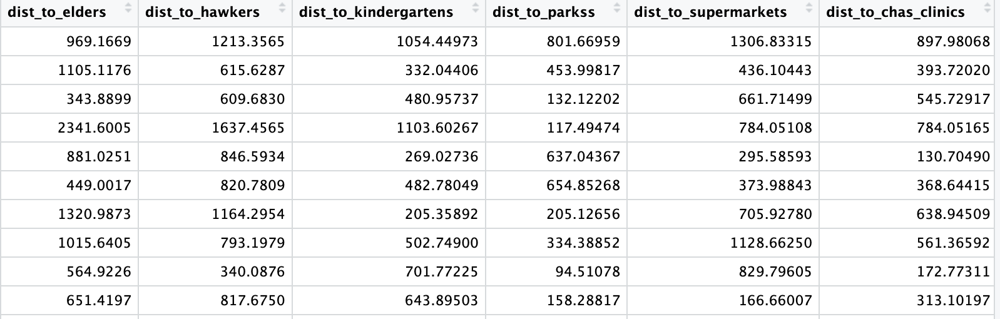
Note that the units are all meter.
Next saving and reading the data for later convenient analysis
saveRDS(resale_tidy3, "data/rds/resale_tidy3.rds")resale_tidy3 <- readRDS("data/rds/resale_tidy3.rds")Select the target area
resale_tidy4 <- resale_tidy3 %>%
filter(town %in% c("JURONG EAST", "WOODLANDS", "YISHUN", "TAMPINES", "KALLANG/WHAMPOA", "QUEENSTOWN")) %>%
filter(flat_type_numeric %in% c(3, 4, 5)) %>%
select(-town, -address)Potting the target area
tmap_options(check.and.fix = TRUE)
mpsz <- st_make_valid(mpsz)
study_areas <- c("JURONG EAST", "WOODLANDS", "YISHUN", "TAMPINES", "KALLANG", "QUEENSTOWN")
mpsz_filtered <- mpsz %>%
filter(PLN_AREA_N %in% study_areas)
tmap_mode("plot")tmap mode set to plottingtm_shape(mpsz) +
tm_borders(col = "gray80", lwd = 0.5) +
tm_shape(mpsz_filtered) +
tm_polygons(col = "PLN_AREA_N", palette = "Set3", border.col = "black") +
tm_text("PLN_AREA_N", size = 0.7, remove.overlap = TRUE, col = "black") +
tm_layout(title = "Map of Study Areas",
legend.position = c("right", "bottom"))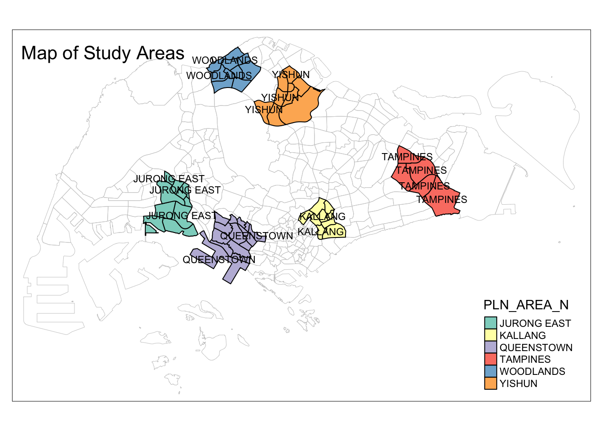
Counting numbers of facilities-point in Buffering area
Buffering
Before buffering,it is import to check and transform into the same crs.
BusStop <- BusStop %>% st_transform(crs = 3414)kindergartens <- kindergartens %>% st_transform(crs = 3414)st_crs(kindergartens)Coordinate Reference System:
User input: EPSG:3414
wkt:
PROJCRS["SVY21 / Singapore TM",
BASEGEOGCRS["SVY21",
DATUM["SVY21",
ELLIPSOID["WGS 84",6378137,298.257223563,
LENGTHUNIT["metre",1]]],
PRIMEM["Greenwich",0,
ANGLEUNIT["degree",0.0174532925199433]],
ID["EPSG",4757]],
CONVERSION["Singapore Transverse Mercator",
METHOD["Transverse Mercator",
ID["EPSG",9807]],
PARAMETER["Latitude of natural origin",1.36666666666667,
ANGLEUNIT["degree",0.0174532925199433],
ID["EPSG",8801]],
PARAMETER["Longitude of natural origin",103.833333333333,
ANGLEUNIT["degree",0.0174532925199433],
ID["EPSG",8802]],
PARAMETER["Scale factor at natural origin",1,
SCALEUNIT["unity",1],
ID["EPSG",8805]],
PARAMETER["False easting",28001.642,
LENGTHUNIT["metre",1],
ID["EPSG",8806]],
PARAMETER["False northing",38744.572,
LENGTHUNIT["metre",1],
ID["EPSG",8807]]],
CS[Cartesian,2],
AXIS["northing (N)",north,
ORDER[1],
LENGTHUNIT["metre",1]],
AXIS["easting (E)",east,
ORDER[2],
LENGTHUNIT["metre",1]],
USAGE[
SCOPE["Cadastre, engineering survey, topographic mapping."],
AREA["Singapore - onshore and offshore."],
BBOX[1.13,103.59,1.47,104.07]],
ID["EPSG",3414]]st_crs(BusStop)Coordinate Reference System:
User input: EPSG:3414
wkt:
PROJCRS["SVY21 / Singapore TM",
BASEGEOGCRS["SVY21",
DATUM["SVY21",
ELLIPSOID["WGS 84",6378137,298.257223563,
LENGTHUNIT["metre",1]]],
PRIMEM["Greenwich",0,
ANGLEUNIT["degree",0.0174532925199433]],
ID["EPSG",4757]],
CONVERSION["Singapore Transverse Mercator",
METHOD["Transverse Mercator",
ID["EPSG",9807]],
PARAMETER["Latitude of natural origin",1.36666666666667,
ANGLEUNIT["degree",0.0174532925199433],
ID["EPSG",8801]],
PARAMETER["Longitude of natural origin",103.833333333333,
ANGLEUNIT["degree",0.0174532925199433],
ID["EPSG",8802]],
PARAMETER["Scale factor at natural origin",1,
SCALEUNIT["unity",1],
ID["EPSG",8805]],
PARAMETER["False easting",28001.642,
LENGTHUNIT["metre",1],
ID["EPSG",8806]],
PARAMETER["False northing",38744.572,
LENGTHUNIT["metre",1],
ID["EPSG",8807]]],
CS[Cartesian,2],
AXIS["northing (N)",north,
ORDER[1],
LENGTHUNIT["metre",1]],
AXIS["easting (E)",east,
ORDER[2],
LENGTHUNIT["metre",1]],
USAGE[
SCOPE["Cadastre, engineering survey, topographic mapping."],
AREA["Singapore - onshore and offshore."],
BBOX[1.13,103.59,1.47,104.07]],
ID["EPSG",3414]]buffer_350m <- st_buffer(resale_tidy4, dist = 350)
buffer_1000m <- st_buffer(resale_tidy4, dist = 1000)Plot the newly created buffers and the assets.
# Set tmap to static mode
tmap_mode("plot")tmap mode set to plotting# Create the map with multiple layers
tm_shape(mpsz) +
tm_borders() +
tm_shape(buffer_350m) +
tm_polygons() +
tm_shape(resale_tidy4) +
tm_dots()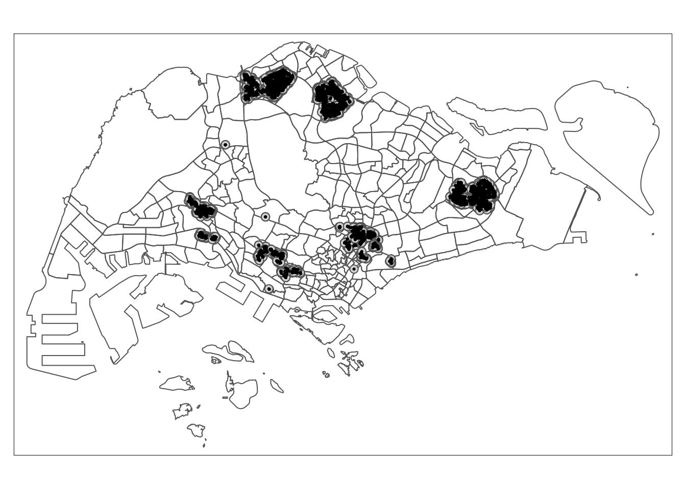
# Set tmap to static mode
tmap_mode("plot")tmap mode set to plotting# Create the map with multiple layers
tm_shape(mpsz) +
tm_borders() +
tm_shape(buffer_1000m) +
tm_polygons() +
tm_shape(resale_tidy4) +
tm_dots()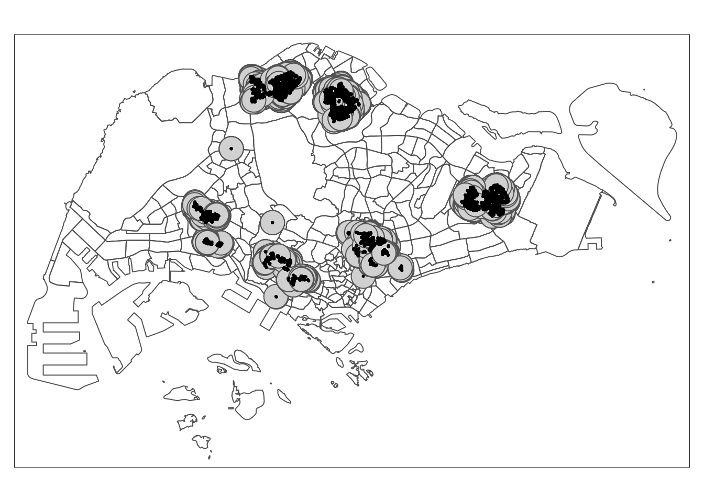
Count number of points within a distance
buffer_350m$BusStop_count <- lengths(st_intersects(buffer_350m, BusStop))buffer_1000m$kindergartens_count<- lengths(st_intersects(buffer_1000m, kindergartens))Adding the new features into the dataset.
resale_tidy5 <- resale_tidy4 %>%
mutate(
BusStop_within_350m = buffer_350m$BusStop_count,
Kindergartens_within_1000m = buffer_1000m$kindergartens_count
)The result show as below:
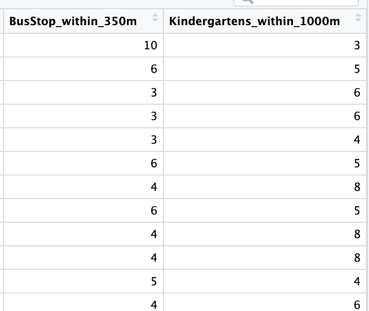
In this study,we first select the train and test data in 2023 for model training and also select the future data 2024 for later predict comparison.
Then we did not consider the time influence to the house price,and we remove the time variables.
resale_tidy5_future <- resale_tidy5 %>%
filter(month >= "2024-07" & month <= "2024-09") %>% select(-month)resale_tidy5 <- resale_tidy5 %>% filter(month >= "2023-01" & month < "2024-01") %>% select(-month)saveRDS(resale_tidy5, "data/rds/resale_tidy5.rds")resale_tidy5 <- readRDS("data/rds/resale_tidy5.rds")3.Computing Correlation Matrix
Before loading the predictors into a predictive model, it is always a good practice to use correlation matrix to examine if there is sign of multicolinearity.
resale_tidy5_nogeo <- resale_tidy5 %>%
st_drop_geometry() Data type checking
sapply(resale_tidy5_nogeo, class) floor_area_sqm lease_commence_date
"numeric" "numeric"
resale_price total_remaining_months
"integer" "numeric"
storey_mid flat_model_numeric
"numeric" "numeric"
flat_type_numeric dist_to_elders
"numeric" "numeric"
dist_to_hawkers dist_to_parks
"numeric" "numeric"
dist_to_supermarkets dist_to_chas_clinics
"numeric" "numeric"
dist_to_cbd dist_to_Shoppingmalls
"numeric" "numeric"
dist_to_MRT dist_to_Goodprimaryschool
"numeric" "numeric"
BusStop_within_350m Kindergartens_within_1000m
"integer" "integer" Replace NA values with 0 in both numeric and integer columns
resale_tidy5_nogeo <- resale_tidy5_nogeo %>%
dplyr::mutate(across(where(~ is.numeric(.) || is.integer(.)), ~ replace_na(., 0)))Generate correlation plot using only numeric and integer columns
corrplot::corrplot(cor(resale_tidy5_nogeo),
diag = FALSE,
order = "AOE",
tl.pos = "td",
tl.cex = 0.5,
method = "number",
type = "upper")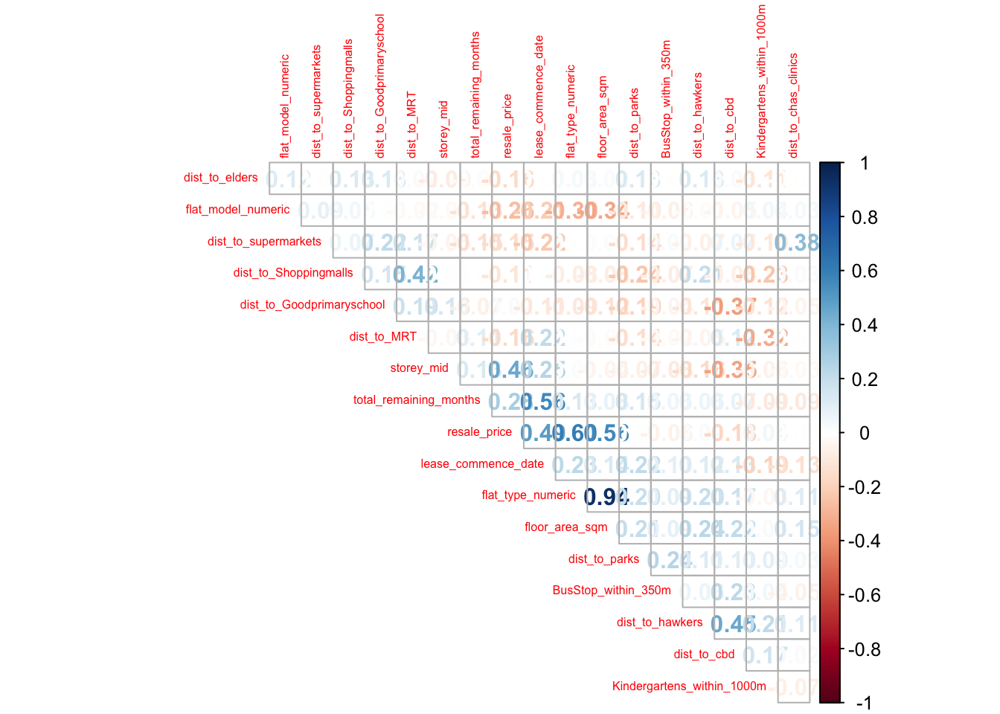
Find correlation coefficients greater than 0.8 or less than -0.8 (excluding the 1s on the diagonal)
cor_matrix <- cor(resale_tidy5_nogeo)
high_corr <- which(abs(cor_matrix) > 0.8 & abs(cor_matrix) < 1, arr.ind = TRUE)
if (nrow(high_corr) > 0) {
cat("There are pairs of variables with correlation coefficients greater than 0.8 or less than -0.8:\n")
for (i in 1:nrow(high_corr)) {
cat(rownames(cor_matrix)[high_corr[i, "row"]], "and", colnames(cor_matrix)[high_corr[i, "col"]],
"The correlation coefficient is:", cor_matrix[high_corr[i, "row"], high_corr[i, "col"]], "\n")
}
} else {
cat("There are no variable pairs with correlation coefficients greater than 0.8 or less than -0.8。\n")
}There are pairs of variables with correlation coefficients greater than 0.8 or less than -0.8:
flat_type_numeric and floor_area_sqm The correlation coefficient is: 0.9368229
floor_area_sqm and flat_type_numeric The correlation coefficient is: 0.9368229 From the result ,we decide to remove : floor_area_sqm and lease_commence_date
resale_tidy5_nogeo <- resale_tidy5_nogeo %>% select(-floor_area_sqm,-lease_commence_date)Check whether we have removed the high relevant variables.
cor_matrix <- cor(resale_tidy5_nogeo)
# Find correlation coefficients greater than 0.8 or less than -0.8 (excluding the 1s on the diagonal)
high_corr <- which(abs(cor_matrix) > 0.8 & abs(cor_matrix) < 1, arr.ind = TRUE)
if (nrow(high_corr) > 0) {
cat("There are pairs of variables with correlation coefficients greater than 0.8 or less than -0.8:\n")
for (i in 1:nrow(high_corr)) {
cat(rownames(cor_matrix)[high_corr[i, "row"]], "and", colnames(cor_matrix)[high_corr[i, "col"]],
"The correlation coefficient is:", cor_matrix[high_corr[i, "row"], high_corr[i, "col"]], "\n")
}
} else {
cat("There are no variable pairs with correlation coefficients greater than 0.8 or less than -0.8。\n")
}There are no variable pairs with correlation coefficients greater than 0.8 or less than -0.8。Removing the highest correlation coefficients variables from the dataset.
resale_tidy6 <- resale_tidy5 %>% select(-floor_area_sqm,-lease_commence_date)summary(resale_tidy6) resale_price total_remaining_months storey_mid flat_model_numeric
Min. : 150000 Min. : 506.0 Min. : 2.00 Min. : 2.000
1st Qu.: 430000 1st Qu.: 730.0 1st Qu.: 5.00 1st Qu.: 6.000
Median : 528000 Median : 850.0 Median : 8.00 Median : 9.000
Mean : 545977 Mean : 867.6 Mean : 8.31 Mean : 9.539
3rd Qu.: 620000 3rd Qu.:1071.0 3rd Qu.:11.00 3rd Qu.:11.000
Max. :1300888 Max. :1154.0 Max. :47.00 Max. :18.000
NA's :520
flat_type_numeric geometry dist_to_elders dist_to_hawkers
Min. :3.000 POINT :6739 Min. : 0.0242 Min. : 40.42
1st Qu.:3.000 epsg:3414 : 0 1st Qu.: 322.9330 1st Qu.: 407.21
Median :4.000 +proj=tmer...: 0 Median : 545.4370 Median : 640.19
Mean :3.948 Mean : 683.7001 Mean : 722.19
3rd Qu.:4.000 3rd Qu.: 918.6596 3rd Qu.: 978.59
Max. :5.000 Max. :2787.0916 Max. :2281.50
dist_to_parks dist_to_supermarkets dist_to_chas_clinics dist_to_cbd
Min. : 60.03 Min. : 0.0043 Min. : 0.0048 Min. :37265
1st Qu.: 517.00 1st Qu.: 163.9752 1st Qu.:105.2877 1st Qu.:46518
Median : 780.76 Median : 253.3517 Median :163.8141 Median :52887
Mean : 943.64 Mean : 289.2077 Mean :175.9627 Mean :50621
3rd Qu.:1324.09 3rd Qu.: 366.9664 3rd Qu.:234.3876 3rd Qu.:54069
Max. :2411.75 Max. :1451.8109 Max. :663.8865 Max. :56689
dist_to_Shoppingmalls dist_to_MRT dist_to_Goodprimaryschool
Min. : 0.0502 Min. : 20.56 Min. : 43.83
1st Qu.: 432.3296 1st Qu.: 352.14 1st Qu.: 233.14
Median : 636.8068 Median : 538.76 Median : 379.55
Mean : 681.2412 Mean : 597.72 Mean : 443.87
3rd Qu.: 897.0554 3rd Qu.: 799.33 3rd Qu.: 565.47
Max. :1732.2770 Max. :1973.05 Max. :2081.76
BusStop_within_350m Kindergartens_within_1000m
Min. : 0.000 Min. : 0.000
1st Qu.: 6.000 1st Qu.: 4.000
Median : 8.000 Median : 5.000
Mean : 7.859 Mean : 5.943
3rd Qu.:10.000 3rd Qu.: 8.000
Max. :16.000 Max. :15.000
Note
The print report above reveals that variables BusStop_within_350m,Kindergartens_within_1000m are consist of 0 values which is reasonable in this case ,because some HDB may not have BusStop and Kindergartens.
However ,will notice there are some missing value in total_remaining_months and we use mean to replace them.
resale_tidy6$total_remaining_months[is.na(resale_tidy6$total_remaining_months)] <- mean(resale_tidy6$total_remaining_months, na.rm = TRUE)resale_tidy6_future <- resale_tidy5_future %>% select(-floor_area_sqm,-lease_commence_date)
resale_tidy6_future$total_remaining_months[is.na(resale_tidy6_future$total_remaining_months)] <- mean(resale_tidy6_future$total_remaining_months, na.rm = TRUE)4.Data Sampling
set.seed(1234)
resale_split <- initial_split(resale_tidy6, prop = 6.5/10,)
train_data <- training(resale_split)
test_data <- testing(resale_split)
saveRDS(train_data, "data/rds/train_data.rds")
saveRDS(test_data, "data/rds/test_data.rds")
train_data <- readRDS("data/rds/train_data.rds")
test_data <- readRDS("data/rds/test_data.rds")5.Building a non-spatial multiple linear regression
price_mlr <- lm(resale_price ~ total_remaining_months +
storey_mid + flat_model_numeric +
flat_type_numeric + dist_to_elders + dist_to_hawkers +
dist_to_parks + dist_to_supermarkets + dist_to_chas_clinics +
dist_to_cbd + dist_to_Shoppingmalls +
dist_to_MRT + dist_to_Goodprimaryschool +BusStop_within_350m+
Kindergartens_within_1000m,
data=train_data)
summary(price_mlr)
Call:
lm(formula = resale_price ~ total_remaining_months + storey_mid +
flat_model_numeric + flat_type_numeric + dist_to_elders +
dist_to_hawkers + dist_to_parks + dist_to_supermarkets +
dist_to_chas_clinics + dist_to_cbd + dist_to_Shoppingmalls +
dist_to_MRT + dist_to_Goodprimaryschool + BusStop_within_350m +
Kindergartens_within_1000m, data = train_data)
Residuals:
Min 1Q Median 3Q Max
-349377 -46190 -7675 39364 908630
Coefficients:
Estimate Std. Error t value Pr(>|t|)
(Intercept) 4.814e+04 1.828e+04 2.633 0.00850 **
total_remaining_months 3.850e+02 8.256e+00 46.630 < 2e-16 ***
storey_mid 5.833e+03 2.173e+02 26.844 < 2e-16 ***
flat_model_numeric -5.503e+02 3.878e+02 -1.419 0.15596
flat_type_numeric 1.257e+05 1.778e+03 70.695 < 2e-16 ***
dist_to_elders -3.652e+01 2.530e+00 -14.434 < 2e-16 ***
dist_to_hawkers -9.553e+00 3.616e+00 -2.642 0.00827 **
dist_to_parks -4.678e+01 2.360e+00 -19.825 < 2e-16 ***
dist_to_supermarkets -3.147e+01 7.211e+00 -4.365 1.30e-05 ***
dist_to_chas_clinics 3.569e+01 1.350e+01 2.643 0.00826 **
dist_to_cbd -5.377e+00 3.032e-01 -17.733 < 2e-16 ***
dist_to_Shoppingmalls 4.488e+00 4.385e+00 1.023 0.30614
dist_to_MRT -9.700e+01 4.304e+00 -22.540 < 2e-16 ***
dist_to_Goodprimaryschool 3.505e+01 4.683e+00 7.486 8.56e-14 ***
BusStop_within_350m -3.636e+03 4.879e+02 -7.451 1.11e-13 ***
Kindergartens_within_1000m 7.208e+03 4.671e+02 15.431 < 2e-16 ***
---
Signif. codes: 0 '***' 0.001 '**' 0.01 '*' 0.05 '.' 0.1 ' ' 1
Residual standard error: 75930 on 4364 degrees of freedom
Multiple R-squared: 0.7566, Adjusted R-squared: 0.7558
F-statistic: 904.4 on 15 and 4364 DF, p-value: < 2.2e-16From the result,except flat_model,dist_to_hawkers,dist_to_chas_clinics,dist_to_Shoppingmalls,other variables are all significant .
With dist_to_elders,dist_to_parks,dist_to_supermarkets,dist_to_cbd,dist_to_MRT,BusStop_within_350m values get higher,the dependent variable will get smaller.For example the higher distance between CBD and the HDB ,the lower house price will be.
The R-squared and adjusted R-squared of the model are high, indicating that the model has strong explanatory power for the dependent variable.
Multicollinearity check with VIF
vif <- performance::check_collinearity(price_mlr)
kable(vif,
caption = "Variance Inflation Factor (VIF) Results") %>%
kable_styling(font_size = 18) | Term | VIF | VIF_CI_low | VIF_CI_high | SE_factor | Tolerance | Tolerance_CI_low | Tolerance_CI_high |
|---|---|---|---|---|---|---|---|
| total_remaining_months | 1.473605 | 1.419527 | 1.534655 | 1.213922 | 0.6786077 | 0.6516124 | 0.7044600 |
| storey_mid | 1.297002 | 1.253526 | 1.347933 | 1.138860 | 0.7710091 | 0.7418767 | 0.7977498 |
| flat_model_numeric | 1.158517 | 1.124070 | 1.202528 | 1.076344 | 0.8631726 | 0.8315816 | 0.8896244 |
| flat_type_numeric | 1.247064 | 1.206708 | 1.295299 | 1.116720 | 0.8018834 | 0.7720225 | 0.8287010 |
| dist_to_elders | 1.125374 | 1.093420 | 1.168257 | 1.060836 | 0.8885936 | 0.8559757 | 0.9145617 |
| dist_to_hawkers | 1.677701 | 1.611681 | 1.750846 | 1.295261 | 0.5960539 | 0.5711526 | 0.6204701 |
| dist_to_parks | 1.309632 | 1.265380 | 1.361263 | 1.144391 | 0.7635734 | 0.7346121 | 0.7902766 |
| dist_to_supermarkets | 1.432388 | 1.380749 | 1.491030 | 1.196824 | 0.6981348 | 0.6706772 | 0.7242444 |
| dist_to_chas_clinics | 1.289642 | 1.246620 | 1.340168 | 1.135624 | 0.7754093 | 0.7461752 | 0.8021690 |
| dist_to_cbd | 1.984741 | 1.900952 | 2.076323 | 1.408808 | 0.5038440 | 0.4816207 | 0.5260521 |
| dist_to_Shoppingmalls | 1.525338 | 1.468215 | 1.589431 | 1.235046 | 0.6555923 | 0.6291561 | 0.6810992 |
| dist_to_MRT | 1.597965 | 1.536590 | 1.666359 | 1.264106 | 0.6257960 | 0.6001107 | 0.6507915 |
| dist_to_Goodprimaryschool | 1.430574 | 1.379043 | 1.489111 | 1.196066 | 0.6990202 | 0.6715418 | 0.7251406 |
| BusStop_within_350m | 1.148264 | 1.114562 | 1.191881 | 1.071571 | 0.8708798 | 0.8390098 | 0.8972136 |
| Kindergartens_within_1000m | 1.332344 | 1.286706 | 1.385246 | 1.154272 | 0.7505571 | 0.7218933 | 0.7771784 |
plot(vif) +
theme(axis.text.x = element_text(angle = 45, hjust = 1))Variable `Component` is not in your data frame :/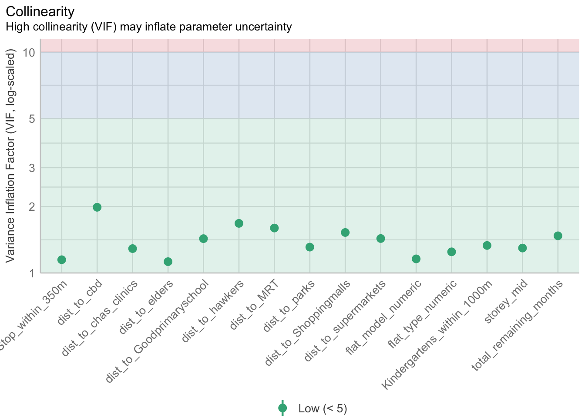
All VIF values are less than 5, and no further multicollinearity processing is required. Overall, this is a relatively healthy model and meets expectations in terms of collinearity detection.
6.Preparing coordinates data
The code chunk below extract the x,y coordinates of the full, training and test data sets.
coords <- st_coordinates(resale_tidy6)
coords_train <- st_coordinates(train_data)
coords_test <- st_coordinates(test_data)test_data_no <- test_data %>% st_drop_geometry()
resale_tidy6_future_test_data <- resale_tidy6_future %>%
st_drop_geometry()Droping geometry field
First, we will drop geometry column of the sf data.frame by using st_drop_geometry() of sf package.
train_data <- train_data %>%
st_drop_geometry()7.Calibrating Random Forest Model
set.seed(1234)
rf <- ranger(resale_price ~ total_remaining_months +
storey_mid + flat_model_numeric +
flat_type_numeric + dist_to_elders + dist_to_hawkers +
dist_to_parks + dist_to_supermarkets + dist_to_chas_clinics +
dist_to_cbd + dist_to_Shoppingmalls +
dist_to_MRT + dist_to_Goodprimaryschool +BusStop_within_350m+
Kindergartens_within_1000m,
data=train_data,
importance = 'impurity')
rfRanger result
Call:
ranger(resale_price ~ total_remaining_months + storey_mid + flat_model_numeric + flat_type_numeric + dist_to_elders + dist_to_hawkers + dist_to_parks + dist_to_supermarkets + dist_to_chas_clinics + dist_to_cbd + dist_to_Shoppingmalls + dist_to_MRT + dist_to_Goodprimaryschool + BusStop_within_350m + Kindergartens_within_1000m, data = train_data, importance = "impurity")
Type: Regression
Number of trees: 500
Sample size: 4380
Number of independent variables: 15
Mtry: 3
Target node size: 5
Variable importance mode: impurity
Splitrule: variance
OOB prediction error (MSE): 1550984845
R squared (OOB): 0.9343029 OOB prediction error (MSE): 1546803122. The mean square error (MSE) of the out-of-bag data (OOB) is 1546803122. MSE is used to measure the prediction error of the model. The smaller the value, the more accurate the model’s prediction. OOB MSE provides an unbiased estimate of the generalization performance of the model.
R squared (OOB): 0.93448 .The R squared value of the out-of-bag data is 0.93448. R squared values close to 1 indicate that the model can explain the variance of the data well. In this case, 93.448% of the variance can be explained by the model, indicating that the model performs well on the out-of-bag data.
Extracting feature importance
importance_rf <- rf$variable.importance
importance_df <- data.frame(Feature = names(importance_rf),
Importance = importance_rf)
library(dplyr)
importance_df <- importance_df %>%
arrange(desc(Importance))
print(importance_df) Feature Importance
flat_type_numeric flat_type_numeric 2.721029e+13
total_remaining_months total_remaining_months 1.555766e+13
dist_to_cbd dist_to_cbd 1.199639e+13
storey_mid storey_mid 1.095255e+13
flat_model_numeric flat_model_numeric 7.970761e+12
dist_to_MRT dist_to_MRT 4.552051e+12
dist_to_Goodprimaryschool dist_to_Goodprimaryschool 3.329271e+12
dist_to_elders dist_to_elders 3.199836e+12
dist_to_supermarkets dist_to_supermarkets 3.138500e+12
dist_to_hawkers dist_to_hawkers 3.126396e+12
dist_to_parks dist_to_parks 3.004545e+12
dist_to_Shoppingmalls dist_to_Shoppingmalls 2.902800e+12
Kindergartens_within_1000m Kindergartens_within_1000m 2.010949e+12
dist_to_chas_clinics dist_to_chas_clinics 1.973228e+12
BusStop_within_350m BusStop_within_350m 1.281325e+12ggplot(importance_df, aes(x = reorder(Feature, Importance), y = Importance)) +
geom_bar(stat = "identity") +
coord_flip() +
labs(title = "Feature Importance for Random Forest Model (Ranger)",
x = "Features",
y = "Importance")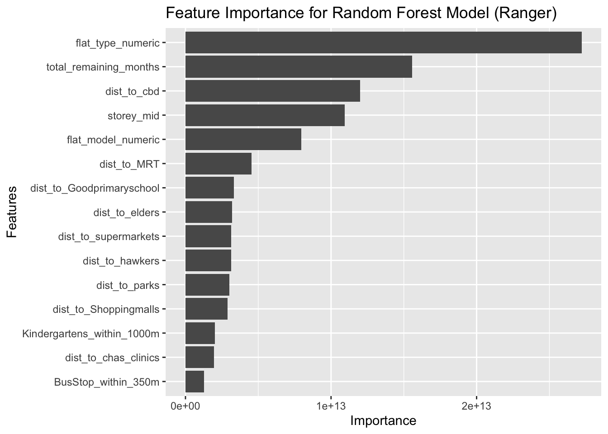
Feature importance analysis shows that the type of house, remaining lease time, distance to the CBD, floor and proximity to transportation hubs (such as MRT stations) have the greatest impact on HDB resale prices. Other living amenities have some impact on prices, but the effect is smaller.
8.Calibrating Geographical Random Forest Model
Calibrating using training data
Geographically Weighted Random Forest optimal bandwidth selection: grf.bw-This function finds the optimal bandwidth for the Geographically Weighted Random Forest algo-rithm using an exhaustive approach.
optimal_bw <- grf.bw(
formula = resale_price ~ total_remaining_months +
storey_mid + flat_model_numeric +
flat_type_numeric + dist_to_elders + dist_to_hawkers +
dist_to_parks + dist_to_supermarkets + dist_to_chas_clinics +
dist_to_cbd + dist_to_Shoppingmalls +
dist_to_MRT + dist_to_Goodprimaryschool +BusStop_within_350m+
Kindergartens_within_1000m,
dataset = train_data,
kernel = "adaptive",
coords = coords_train,
bw.min = 30,
bw.max = 100,
step = 10,
trees = 50,
nthreads = 8
)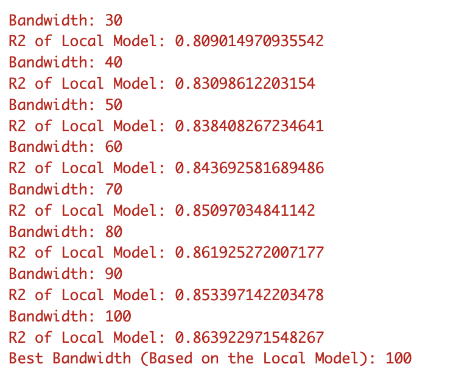
From the result,we can get the best bandwidth 100 and we use this value for Geographical Random Forest Model analysis.
saveRDS(optimal_bw, "data/rds/optimal_bw.rds")optimal_bw <- readRDS("data/rds/optimal_bw.rds")The code chunk below calibrate a geographic ranform forest model by using grf() of SpatialML package.
set.seed(1234)
gwRF_adaptive <- grf(formula = resale_price ~ total_remaining_months +
storey_mid + flat_model_numeric +
flat_type_numeric + dist_to_elders + dist_to_hawkers +
dist_to_parks + dist_to_supermarkets + dist_to_chas_clinics +
dist_to_cbd + dist_to_Shoppingmalls +
dist_to_MRT + dist_to_Goodprimaryschool +BusStop_within_350m+
Kindergartens_within_1000m,
dframe=train_data,
bw=optimal_bw,
kernel="adaptive",
coords=coords_train)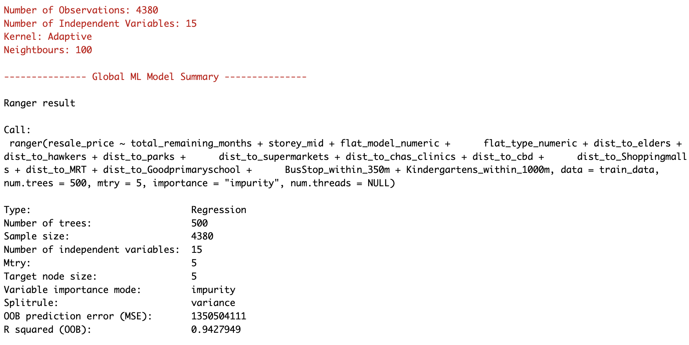
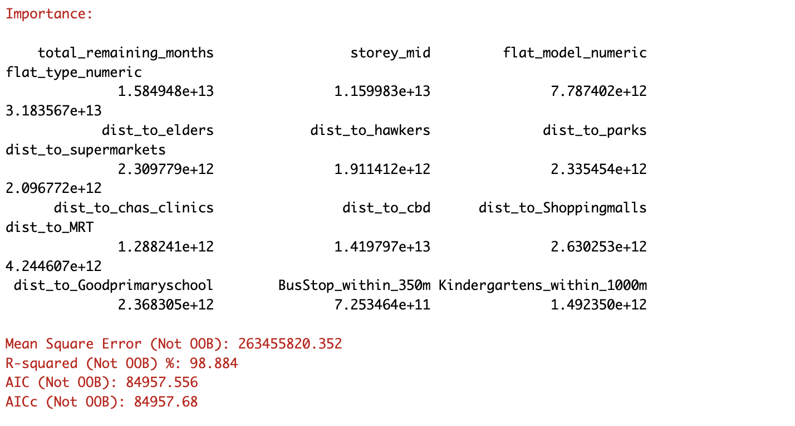
OOB prediction error (MSE): 1350504111, this is the out-of-bag mean square error (MSE) of the model, which measures the prediction error of the model.
R squared (OOB): 0.9427949, the value of out-of-bag data, close to 1, indicating that the model has a high explanatory power on out-of-bag data.
Flat_type_numeric and total_remaining_months have the highest importance scores, indicating that these variables have a greater impact on predicting the price of second-hand houses.
Storey_mid and dist_to_cbd also have high importance, which may indicate that the floor of the house and the distance from the city center are also factors that determine the price.
Other variables (such as dist_to_elders, dist_to_hawkers, dist_to_parks, etc.) also contribute to the prediction, but their importance is lower.
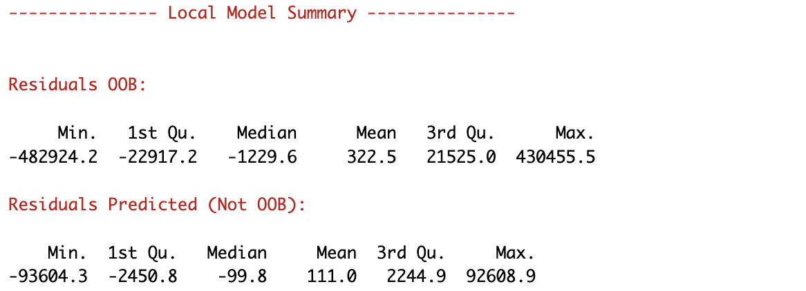

The model shows high explanatory power on the out-of-bag data (value of R squared 90.414%), but the out-of-bag mean squared error is relatively high, indicating that there may be some generalization error.
The model performs very well on the training data, with an almost perfect fit (value R squared close to 100%), but this may also indicate that the model is at risk of overfitting the training data.
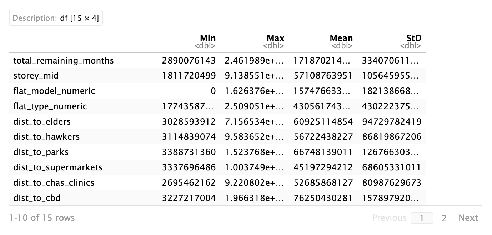
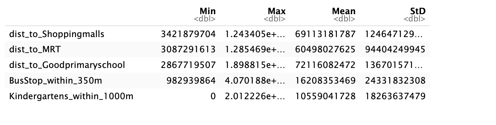
Descriptive statistics of the 15 variables in the dataframe, including minimum value (Min), maximum value (Max), mean (Mean), and standard deviation (Std)
saveRDS(gwRF_adaptive, "data/rds/gwRF_adaptive.rds")gwRF_adaptive <- readRDS("data/rds/gwRF_adaptive.rds")9.Predicting by using test data
Multiple linear regression model
mlr_pred <- predict(price_mlr, test_data_no)Random Forest Model
rf_pred <- predict(rf,test_data_no)Geographical Random Forest Model
Preparing the test data
test_data_n <- cbind(test_data, coords_test) %>%
st_drop_geometry()Next, predict.grf() of spatialML package will be used to predict the resale value by using the test data and gwRF_adaptive model calibrated earlier.
gwRF_pred <- predict.grf(gwRF_adaptive,
test_data_n,
x.var.name="X",
y.var.name="Y",
local.w=1,
global.w=0)saveRDS(gwRF_pred, "data/rds/gwRF_pred.rds")gwRF_pred <- readRDS("data/rds/gwRF_pred.rds")Converting the predicting output into a data frame
The output of the predict.grf() is a vector of predicted values. It is wiser to convert it into a data frame for further visualisation and analysis.
GwRF_pred_df <- as.data.frame(gwRF_pred)mlr_pred_df <- as.data.frame(mlr_pred)rf_pred_df <- as.data.frame(rf_pred)10.Visualising the predicted values
Rename columns
colnames(GwRF_pred_df) <- "gwRF_pred"
colnames(mlr_pred_df) <- "mlr_pred"
colnames(rf_pred_df) <- "rf_pred"Bind the prediction result column to the test data
test_data_pred <- cbind(test_data["resale_price"], mlr_pred_df, rf_pred_df, GwRF_pred_df)This allows us to visually see the actual value of each data point and the predicted values of different models arranged together in the same table
print(test_data_pred)Simple feature collection with 2359 features and 4 fields
Geometry type: POINT
Dimension: XY
Bounding box: xmin: 16408.86 ymin: 30188.16 xmax: 42444.73 ymax: 47860.87
Projected CRS: SVY21 / Singapore TM
First 10 features:
resale_price mlr_pred rf_pred gwRF_pred geometry
1 368000 413372.3 380866.0 493909.7 POINT (16505.05 36963.29)
2 305000 500539.6 395622.1 461752.8 POINT (17261.37 36026.8)
3 350000 446776.9 400633.5 461373.3 POINT (17256.96 36148.69)
4 327000 398286.7 396987.1 483943.3 POINT (17659.32 36293.26)
5 310000 330784.9 345153.6 510994.7 POINT (18441.84 33475.1)
6 450000 572783.2 488658.9 512185.2 POINT (17396.62 35792.5)
7 500000 572889.2 561440.2 494024.9 POINT (17911.43 35623.18)
8 450000 541509.1 485654.9 517545.5 POINT (17659.29 36293.22)
9 410000 371924.5 438132.9 499850.1 POINT (18421.09 33593.78)
10 500000 505186.0 492564.3 505009.4 POINT (17368.73 33925.16)11.Calculating Root Mean Square Error
RMSE represents the average deviation between the predicted value and the actual value. The unit is the same as the original data, so it can directly reflect the magnitude of the prediction error. The smaller the error, the lower the RMSE value, indicating that the model prediction is more accurate.
rmse_mlr <- rmse(test_data_pred$resale_price, test_data_pred$mlr_pred)
rmse_rf <- rmse(test_data_pred$resale_price, test_data_pred$rf_pred)
rmse_gwRF <- rmse(test_data_pred$resale_price, test_data_pred$gwRF_pred)12.Model comparison
print(data.frame(
Model = c("Multiple Linear Regression","Random Forest","Geographically Weighted Random Forest"),
RMSE = c(rmse_mlr, rmse_rf,rmse_gwRF)
)) Model RMSE
1 Multiple Linear Regression 74500.39
2 Random Forest 41600.14
3 Geographically Weighted Random Forest 135184.74Random Forest:
RMSE = 41875.56 .The Random Forest model performs best among the three models, with the smallest RMSE value, indicating that its prediction results are closest to the actual values.
Multiple Linear Regression:
RMSE = 74505.25. The Multiple Linear Regression model performs second, with a higher RMSE value than the Random Forest, indicating that its prediction accuracy is lower than that of the Random Forest.
Geographically Weighted Random Forest (GWRF):
RMSE = 135184.74 .The Geographically Weighted Random Forest model has the largest RMSE value, which is much higher than the other two models, indicating that its prediction effect is the worst on this dataset.
#After confirming the test_data_pred data frame structure, run pivot_longer()
test_data_long <- test_data_pred %>%
pivot_longer(cols = c("mlr_pred", "rf_pred","gwRF_pred"),
names_to = "Model",
values_to = "Predicted")#Using ggplot2 to draw faceted scatter plots
ggplot(data = test_data_long, aes(x = Predicted, y = resale_price)) +
geom_point(alpha = 0.6) +
facet_wrap(~ Model, scales = "free") +
theme_minimal() +
labs(title = "Model Predictions vs Actual Resale Prices",
x = "Predicted Resale Price",
y = "Actual Resale Price")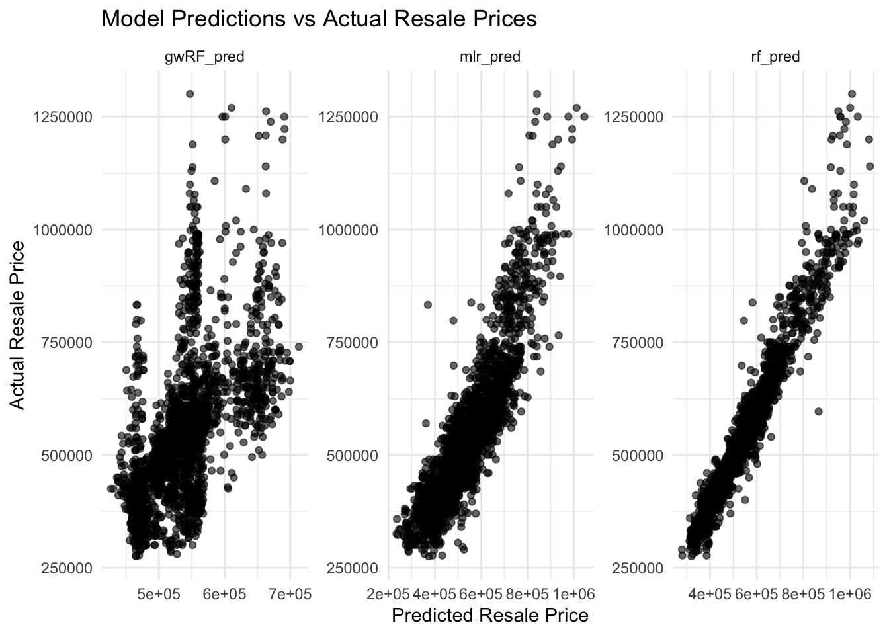
Note
A better predictive model should have the scatter point close to the diagonal line. The scatter plot can be also used to detect if any outliers in the model.
Geographically Weighted Random Forest (gwRF_pred): Most of the data points are concentrated near the diagonal, but there are some points that deviate from the diagonal, especially in the area of high predicted values. Overall, the model is able to capture the trend of price changes, but the accuracy may be lacking in some intervals.
Multiple Linear Regression (mlr_pred): The distribution of predicted values and actual values is relatively even, but there are some points that deviate from the diagonal, especially in the high price range. This model shows a linear trend, but seems to be biased towards high prices.
Random Forest (rf_pred): The relationship between the predicted values and actual values of this model is close to the diagonal, and most of the points are distributed near the diagonal, indicating that the model is relatively accurate in predicting high and low price data. The random forest model seems to capture more price details and performs best.
So,we finally choose Random Forest Model to predict our future price.
13.Predict HDB resale prices between July-September 2024
We apply the same method to predict the price from July to September in 2024.
rf_pred_futre <- predict(rf,resale_tidy6_future_test_data)rf_pred_futre_df <- as.data.frame(rf_pred_futre)pred_futre <- cbind(resale_tidy6_future["resale_price"], rf_pred_futre_df)print(pred_futre)Simple feature collection with 2056 features and 2 fields
Geometry type: POINT
Dimension: XY
Bounding box: xmin: 16494.75 ymin: 30188.18 xmax: 42444.73 ymax: 47860.83
Projected CRS: SVY21 / Singapore TM
First 10 features:
resale_price prediction geometry
1 530000 567742.6 POINT (17874.95 35907.07)
2 500000 502437.2 POINT (17874.88 35907.03)
3 418000 381793.1 POINT (16505.04 36963.21)
4 510000 502310.3 POINT (17874.99 35907.04)
5 390000 373551.8 POINT (16494.76 36917.38)
6 531000 511753.6 POINT (17875 35907.09)
7 410000 367047.7 POINT (16494.75 36917.32)
8 465000 498615.2 POINT (17874.96 35907.06)
9 390000 388659.6 POINT (17416.44 35364.49)
10 405888 375368.9 POINT (17479.6 35465.57)Now we can clearly see the result and the comparison with the actual value.
14.Conclusion
Model performance
Model performance Random Forest: The random forest model performed best among all models with the smallest RMSE value. This shows that the prediction results of the random forest model are closest to the actual values and have high prediction accuracy.
Multiple Linear Regression: The RMSE value of the multiple linear regression model is higher than that of the random forest model, indicating that its prediction effect is not as good as the random forest model. Although the multiple linear regression model can better reveal the linear relationship of the data, it may be limited on complex data sets.
Geographically Weighted Random Forest (GWRF): The GWRF model has the highest RMSE value, which is much higher than the other two models, indicating that its prediction effect is the worst on this data set. The GWRF model introduced geographical weights, but failed to effectively improve the prediction effect in this data set. This may be because the role of geographical factors is not significant, and the model parameters for example the trees,the steps and the range in optimal bandwidth need further optimization.
Feature Importance Analysis
In terms of feature importance, variables such as flat type (flat_type_numeric), remaining lease months (total_remaining_months), and distance to the central business district (dist_to_cbd) have high importance in all models. This indicates that these factors are crucial in predicting HDB resale prices.
15.Reference
Kam, T. S. (2024). 14 Geographically Weighted Predictive Models. R for Geospatial Data Science and Analytics.
Kalogiou, S., & Georganos, S. (2024). SpatialML: Spatial Machine Learning (Version 0.1.7) [Computer software]. https://stamatisgeoai.eu/